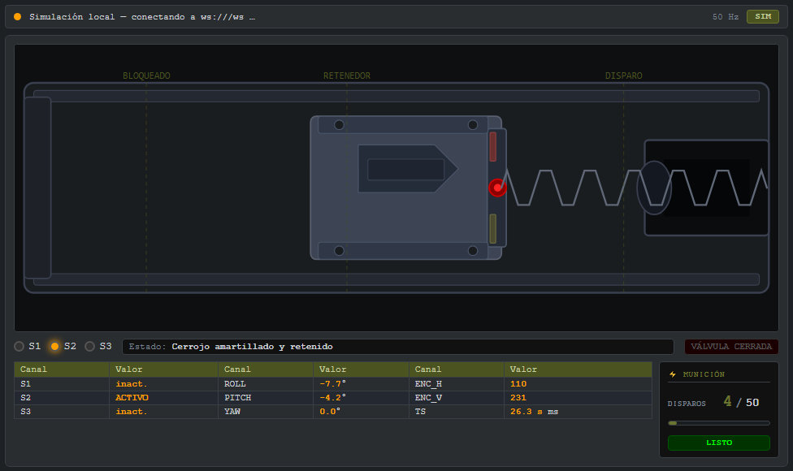
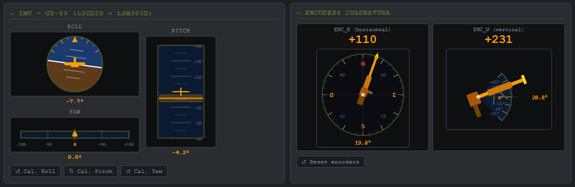
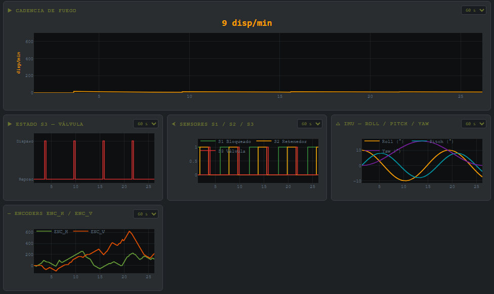
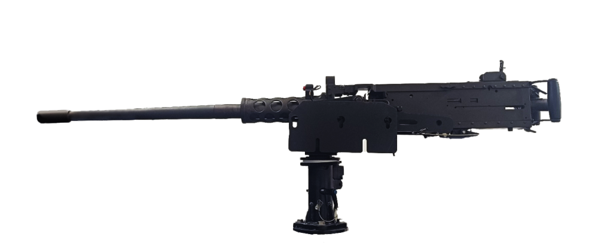
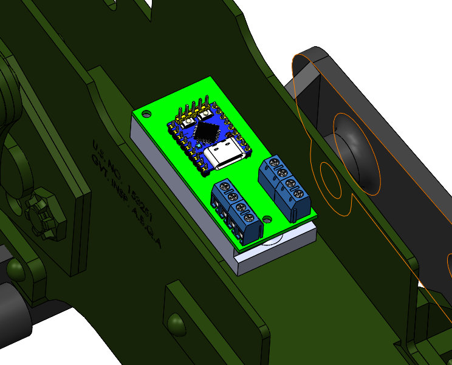
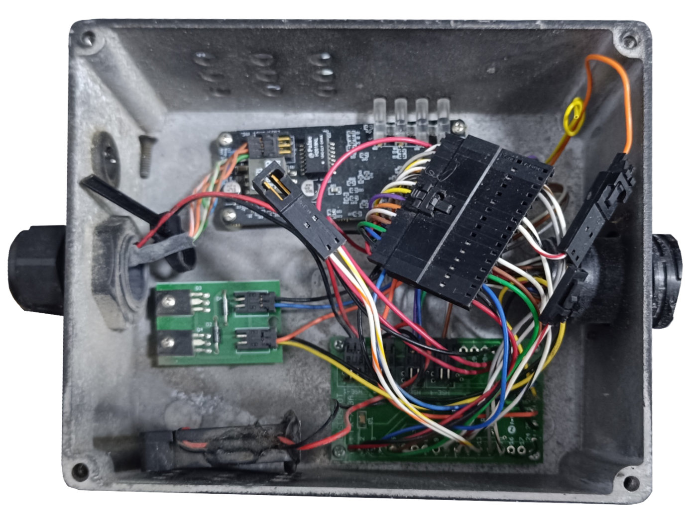
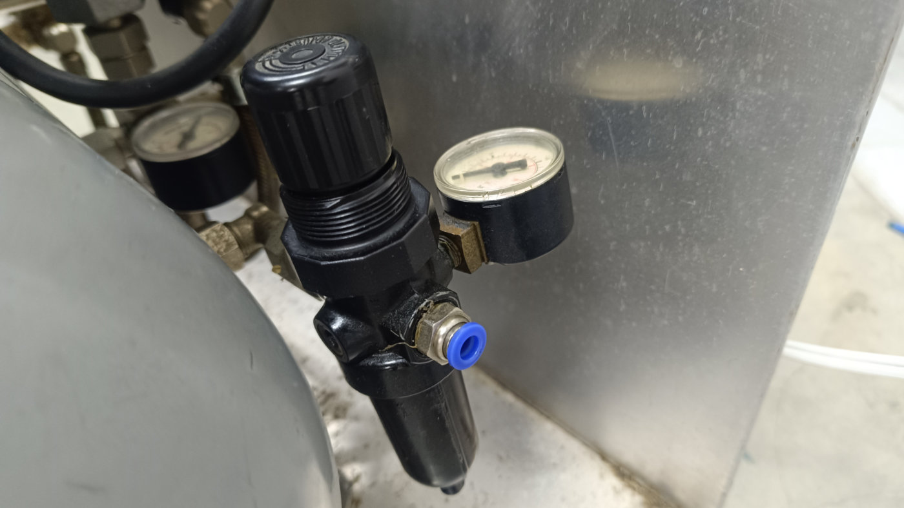

Descripción del Proyecto
Sistema de adquisición de datos para el estudio del simulador de combate con réplica neumática de la ametralladora Browning M2 .50, desarrollado para la Armada con ONIRIS-ID por contrato de TECNALIA. Un ESP32-S3 con firmware MicroPython captura a 50 Hz los estados del ciclo de disparo (sensores S1 bloqueado, S2 retenedor y S3 válvula de gas), la orientación del arma con la IMU GY-89 y la posición de dos encoders de cuadratura, y los transmite por WiFi a un dashboard web en tiempo real. El mismo equipo funciona como mouse USB HID absoluto para apuntar y disparar en el simulador.
Objetivos
- Registrar los estados del ciclo de disparo del mímico M2 .50
- Medir orientación (roll, pitch, yaw) y posición de los encoders
- Visualizar los datos en tiempo real desde cualquier navegador
- Reemplazar la electrónica cerrada de serie por una abierta y compacta
Resultados
- Firmware MicroPython con servidor WebSocket y REST API a 50 Hz
- Dashboard con animación del cerrojo, indicadores IMU y gráficas
- Mouse USB HID: encoders como puntero y S3 como clic
- Modo simulación idéntico en firmware y navegador
Galería







